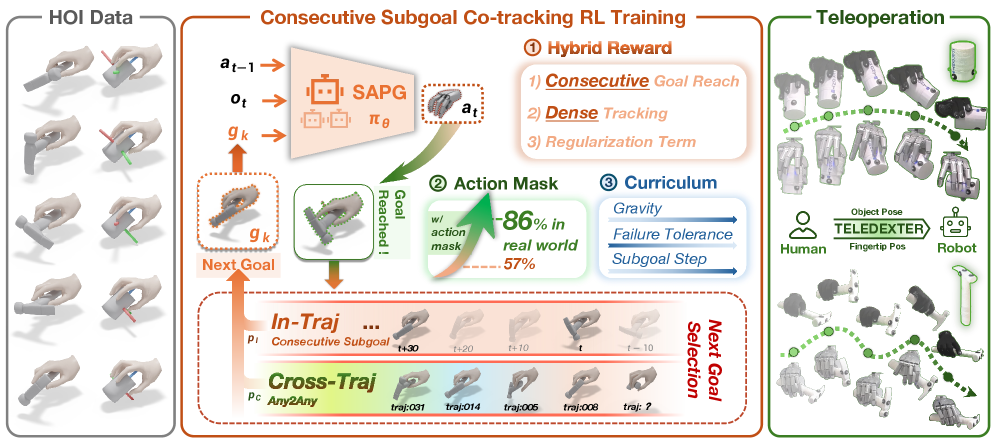
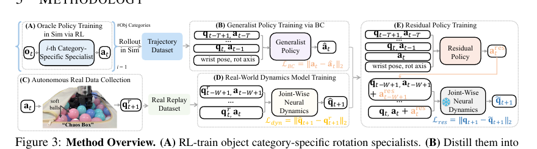
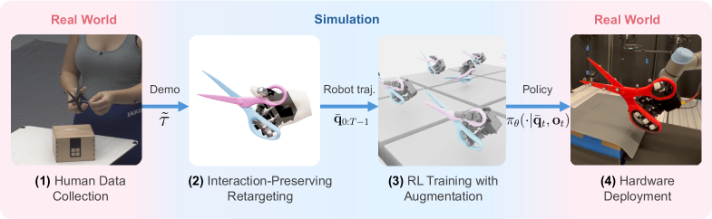
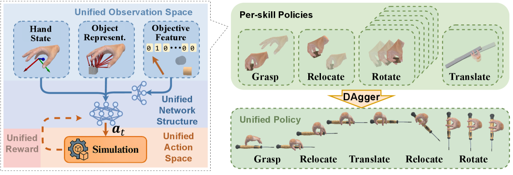

核心判断：前沿正在融合“人类任务语义”和“仿真物理探索”
这四项工作共同说明，灵巧操作的泛化既可以来自数据分工，也可以来自统一问题表述：人类数据提供任务与接触语义，仿真 RL 发现物理动作，少量真机交互修正动力学；而 UniCross 进一步证明，多种基础技能可以共享同一关系状态、动作和奖励结构。
泛化“控制接口”
把人类手—物体运动转换成连续子目标；当前仍按物体训练控制器。
泛化“旋转技能”
一个策略覆盖多几何、旋转轴和腕姿，真实数据只补动力学。
泛化“训练配方”
每个任务一条人类示范，重定向后用仿真 RL 求闭环执行。
泛化“技能空间”
单策略统一抓取、搬移、旋转与平移，并连续串联成长程动作。
先纠正一个容易混淆的判断
“都先采集真实数据再训练”只描述了输入来自现实世界，却没有区分数据是谁产生的、监督什么模块、训练发生在哪里。加入 UniCross 后，这个判断更明确：四篇论文中有一篇完全不依赖真实数据。
| 方法 | 真实数据是什么 | 主要策略怎样学 | 真机数据的作用 | 是否属于直接真机模仿学习 |
|---|---|---|---|---|
| TeleDexter | 离线与在线的人手—物体 MoCap；后续由系统采集机器人演示 | 低层 co-tracking 控制器在仿真中单阶段 RL | 人类参考定义训练目标；机器人演示再训练 Diffusion Policy | 后半段是，低层遥操控制器不是 |
| DexNDM | 真机在软球“Chaos Box”中的自主随机负载交互 | 先仿真 RL 专家，再 BC 蒸馏通用策略 | 学习逐关节真实动力学并训练动作残差 | 不是任务示范学习 |
| REGRIND | 每个任务一条 3D 人手—物体示范 | 重定向后在仿真中 residual RL | 只提供参考运动；无需机器人专属演示数据 | 不是机器人动作 BC |
| UniCross | 无 | 10 个仿真 PPO 专家，再用 DAgger 蒸馏统一策略 | 当前没有真机数据或 Sim-to-Real 阶段 | 不是；纯仿真 RL/蒸馏 |
| DexGen | 部署时遥操作指令；训练动作数据主要来自仿真 rollout | Anygrasp-to-Anygrasp 等仿真 RL，再训练生成式动作先验 | 论文主线不依赖大规模真机示范 | 不是 |
Human reference 可指导 Sim RL；Real interaction 可学习 dynamics；Robot demo 才直接监督 imitation policy
TeleDexter：Toward Human-level Dexterous Teleoperation
Puhao Li, Zeyuan Chen, Yingying Wu et al. · arXiv:2607.11481TeleDexter 与 DexGen 的目标非常接近：操作者不应直接承担所有接触控制，学习到的低层控制器需要把高层意图变成稳定、动态可行的多指动作。核心区别是，TeleDexter不训练一个脱离具体任务参考的生成式动作先验，而是直接训练 hand-object co-tracking RL 控制器。

① 人类只说明“要做到什么”
参考同时包含指尖位置和物体 SE(3) 位姿，而不是把人手关节角生硬映射为机器人关节。
② RL 自己发现“接触怎么做”
策略只需按顺序到达稀疏子目标，可在子目标之间探索换指、滑动与非抓持接触。
③ 在线仍由人控制任务进程
操作者实时更新 wrist、fingertip 和 object targets；策略承担高频、接触敏感的手指关节控制。
第一步：把人类 HOI 变成物理上更合理的机器人参考
人类 MoCap
24 个手部 3D 关节点、腕姿、物体 6D 位姿向量重定向
保持手指方向与指间几何关系几何精修
表面吸引、穿透、自碰撞与时间平滑普通 retargeting 只关心机器人手“像不像人手”，却不知道物体表面在哪里。TeleDexter 的第二阶段把 object mesh 放进优化：近接触点被拉向表面，穿透与指间碰撞被惩罚，并用时间平滑抑制 MoCap 抖动。输出不是要求策略逐帧复制的关节轨迹，而是用于构造 目标指尖位置 + 目标物体位姿 的 co-tracking 序列。
第二步：连续子目标，而不是逐帧模仿
到达当前 fingertip + object 子目标并保持若干帧 → 切换下一个子目标
这是论文最值得借鉴的设计。逐帧 dense tracking 会锁死动作时序，机器人一旦因真实接触发生延迟，参考仍继续向前，误差迅速累积。TeleDexter 改为事件驱动：只有当前子目标真正完成才前进；在两个子目标之间，RL 可以选择不同于人类的、但物理上更可行的接触路径。
混合奖励
稀疏“到达子目标”奖励是主信号，小权重 dense tracking 用于早期探索，另加时间惩罚。
三维课程
逐渐恢复完整重力、收紧位置/旋转容差，并增大相邻子目标之间的时间跨度。
跨轨迹训练
随机参考帧初始化，完成一条轨迹后切换另一条，使单个控制器吸收同一物体约 50 分钟的多模态 HOI。
第三步：零样本 Sim-to-Real 的关键不是只做 Domain Randomization
除了形状、动力学、外力、噪声与延迟随机化，TeleDexter 还引入 Random Action Masking：训练时随机冻结一部分关节，让它们暂时沿用旧命令。这迫使策略适应真实电机不同步、通信抖动和部分关节响应变慢。论文消融中，去掉该正则后 ScrewdriverUse 成功率从 73.3% 降为 0%，说明它不是装饰性增强。
TeleDexter 真正前沿之处：把“会操作的遥操作器”变成数据引擎
TeleDexter 的低层策略本身不是由真实机器人示范 BC 得到；但它解决了此前无法稳定采集高难度真机数据的问题，因此能在下一阶段训练自主视觉策略。
人类 HOI 参考
定义任务与接触变化仿真 RL 控制器
学习物理执行能力真机遥操作演示
每任务 50 条高质量轨迹自主视觉策略
多相机 RGB Diffusion Policy| 自主任务 | 训练数据 | 真实成功率 | 主要瓶颈 |
|---|---|---|---|
| BulbInstall | 50 条 TeleDexter 演示 | 46.7% | 精确对孔与对轴 |
| HammerDriver | 50 条 TeleDexter 演示 | 73.3% | 持续冲击接触 |
| BrushForward | 50 条 TeleDexter 演示 | 40.0% | RGB 下细薄手柄初始抓取 |
DexNDM：用真实数据学习动力学，而不是学习任务
Xueyi Liu, He Wang, Li Yi · ICLR 2026DexNDM 目标是一个可在不同物体、旋转轴和腕姿下工作的真机手内旋转策略。它先用仿真建立强大的通用技能，再用无需物体姿态标注的真实交互数据补偿现实差异。

① Specialist → Generalist
五类物体分别训练 privileged PPO 专家，只聚合成功轨迹，行为克隆成仅依赖本体历史、腕姿与旋转轴的统一策略。
② Chaos Box 真实采集
真机在装满软球的容器中回放策略动作并加噪，随机外载覆盖多种交互动力学，无需目标物体位姿和人工复位。
③ Joint-wise residual
每个关节只用自身状态—动作历史预测下一状态；残差策略据此修正基础动作，缩小真实与仿真响应差异。
只预测单关节的有效动力学，以低维信息瓶颈换取少数据下的泛化
为什么逐关节模型反而更有效
Whole-hand model 的困难
输入维度高，容易记住训练数据中的偶然全手相关性；真实样本少或采集分布与任务分布不同，预测容易崩溃。
Joint-wise model 的假设
物体载荷、关节耦合和执行器误差最终都会投影到每个关节的局部运动历史。低维输入牺牲少量上限，却显著提高样本效率与 OOD 稳定性。
这条路线的“泛化”主要体现在旋转 primitive 的条件覆盖，而不是一个策略直接完成所有装配任务。论文中的锤子、刷子、笔、注射器、螺母与家具装配，是将通用旋转策略嵌入 VR 遥操作后的应用：人类决定任务序列，DexNDM 在需要手内旋转时提供稳定动作能力。
REGRIND：一条人类示范如何变成真机 RL 技能
Yunhai Feng, Natalie Leung, Jiaxuan Wang et al. · arXiv:2607.11874REGRIND 是最简洁的 real-to-sim-to-real 配方：采集一条包含人手和物体 3D 姿态的演示，先做 interaction-aware retargeting，再以它作为仿真 RL 的参考与初始化分布，最后零样本上真机。

① Interaction Mesh
共同连接手与物体关键点，以边向量误差保持“哪根手指在物体哪一侧、相对距离如何”等交互语义。
② Reference-guided RL
重定向轨迹既提供 object-centric tracking reward，也作为 reference state initialization，直接把探索放到高价值状态附近。
③ 在线轨迹增强
起始位姿随机 ±5 cm、±30°，扰动沿时间平滑衰减到原目标，使单示范策略能覆盖一簇初始状态。
算法主链
1 Human Demo
人手 + 物体 3D pose交互保持重定向
机器人形态适配Residual RL
关键点奖励 + RSI + DRZero-shot Real
MoCap 物体状态闭环论文真机结果为 LEAP-Scissors 9/10、LEAP-Screwdriver 10/10、WUJI-Screwdriver 9/10，而 WUJI-Scissors 为 0/10。这个失败很重要：即使仿真四项成功率都接近 99%，不可反驱电机与不准确剪刀 mesh 仍能让真机完全失效。它提醒我们，“单示范”减少的是任务数据，不代表系统辨识、物体建模和状态估计可以省略。
UniCross：用统一关系空间连接四种灵巧技能
Hui Zhang, Julian Ferchow, Jie Song, Mirko Meboldt · arXiv:2607.28198UniCross 与前三篇的数据路线不同：它不使用人类示范或真实机器人交互，而是追问一个更基础的问题——抓取、搬移、手内旋转和手内平移，能否被写成同一种 hand-object relational control problem，并由单个策略无缝组合？

① 统一输入与动作
策略始终接收 hand state、逐 link 接触/力/最近表面向量和关系目标；始终输出腕部 6 个虚拟关节与全部手指关节的增量命令。
② 技能只是目标实例不同
抓取、搬移、旋转和平移通过 root frame / hand frame 中哪些位姿量需要追踪、固定或释放来区分，而不是换一套状态和控制器。
③ 专家蒸馏成统一策略
1 个抓取、1 个搬移、6 个旋转轴向和2个平移方向专家用 PPO 训练；DAgger 查询对应专家，聚合统一策略访问到的状态。
统一的关键：把技能写成“关系运动约束”
| 技能 | 在 root frame 中 | 在 hand frame 中 | 控制含义 |
|---|---|---|---|
| Grasp | 物体保持桌面初始位姿 | 手向物体靠近并建立稳定接触 | 改变手—物体关系以形成抓取 |
| Relocate | 物体和腕部到达目标 SE(3) | 物体相对手的位姿固定 | 保持抓取关系，整体搬运 |
| Rotate | 腕部固定 | 物体位置固定、姿态沿目标轴更新 | 保持物体中心，改变相对朝向 |
| Translate | 腕部固定 | 物体朝目标轴平移、朝向固定 | 保持方向，改变物体在手中的位置 |
rₜ = contact & motion goal + multi-frame pose tracking + stability regularization
物体表示不依赖类别 ID 或完整点云网络，而是对每个手部 link 保存是否接触、接触力大小，以及到物体最近表面点的距离向量。这些量同时表达局部几何和当前接触关系，使策略能对圆柱采取平滑包覆运动、对棱柱产生沿边周期换指，并跨尺度改变接触间距。
为什么它能串联技能
很多单技能方法依赖互不兼容的假设，例如旋转时固定掌心向上、平移时依赖掌托，导致一个技能的终止状态并不是下一个技能的合法初始状态。UniCross 从一开始就让四类技能共享完整腕手动作空间，并要求物体始终由手稳定约束，因此可以直接执行 抓取 → 搬移 → 旋转 或 抓取 → 搬移 → 平移。
- 训练 boxes/cylinders，测试 spheres、hexagonal/octagonal prisms 和不规则非凸物体。
- 同一框架分别训练 Allegro、MANO 与 Sharpa Wave 的统一策略。
- 持续施加最高约 10 倍物体重力的随机外力时仍保持较小性能下降。
- 单策略四项技能成功率在统一设置中约为 98.7%–99.1%。
- 结果是仿真运动合成，论文没有报告真实机器人部署。
- “跨手型”指框架可迁移，但每种手型重新训练一个统一策略，并非同一权重直接跨 embodiment。
- 训练形状以参数化基础几何为主，真实感知、遮挡、物性误差仍未进入闭环。
- 技能覆盖稳定持物关系，不包含释放、抛掷、双手交接或外部工具接触阶段。
横向比较：四篇工作的“通用”不是同一个含义
| 维度 | TeleDexter | DexNDM | REGRIND | UniCross |
|---|---|---|---|---|
| 核心问题 | 人类实时意图如何变成稳定多接触动作 | 通用仿真旋转策略如何适应真实动力学 | 如何从一条人类示范学闭环工具技能 | 四种基础技能能否共享同一控制表述 |
| 任务覆盖 | 旋转、换指、锤/刷/螺丝刀/灯泡 | 多物体、多轴、多腕姿连续旋转 | 剪刀、螺丝刀 | 抓取、搬移、手内旋转、手内平移及串联 |
| 策略粒度 | 每物体一个 co-tracking controller | 一个条件化 rotation generalist | 每任务一个 residual policy | 每手型一个 cross-skill unified policy |
| 真实数据 | 人类 HOI；在线目标；机器人演示 | 自主随机负载真机 transition | 单条 3D 人类 HOI | 无 |
| 仿真作用 | RL 发现子目标间多接触执行 | RL 专家、BC 通用策略的技能来源 | RL 修复参考并获得闭环鲁棒性 | PPO 专家学习全部技能，DAgger 蒸馏 |
| 真机适配 | DR + action masking，zero-shot | joint-wise dynamics + residual | 系统辨识 + DR/curriculum，zero-shot | 尚未验证 |
| 主要依赖 | 实时物体位姿、每物体 HOI 与重训 | 力/接触历史与 Chaos Box | MoCap 物体位姿、准确 mesh | 仿真接触/力/最近表面向量与技能标签 |
TeleDexter、UniCross 与 DexGen：分别补足意图、技能结构和动作覆盖
| 问题 | DexGen | TeleDexter | 对我们的判断 |
|---|---|---|---|
| 高层输入 | 粗粒度遥操作 guidance / 目标状态 | 实时指尖位置 + 物体位姿子目标 | TeleDexter 的目标接口更显式、更 object-centric |
| 动作知识来源 | 程序化抓取状态驱动的仿真 RL rollout | 人类 HOI 参考驱动的仿真 co-tracking RL | 前者覆盖广，后者任务语义与接触序列更真实 |
| 控制器形态 | 生成式 action prior + guidance | 直接闭环 RL policy | 直接策略少一层生成误差，但任务条件化成本更高 |
| 长程误差 | 生成模型闭环可能发生 covariate shift 与误差累积 | 事件驱动子目标，完成后才推进 | Anygrasp controller 可借鉴“到达确认 + 自适应推进” |
| 规模瓶颈 | 仿真数据质量与抓取转移物理可行性 | 每物体 HOI 采集与单独训练 | 两者互补，不应直接相互替代 |
UniCross 与 DexGen 的直接对照
| 维度 | DexGen | UniCross | 可组合方向 |
|---|---|---|---|
| 技能来源 | Anygrasp-to-Anygrasp 等仿真 rollout 中隐式涌现 | grasp / relocate / rotate / translate 显式建模 | 为 DexGen rollout 增加 task mode 与关系目标标签 |
| 状态目标 | 抓取状态与遥操作 guidance | root frame + hand frame 中的 tracked/fixed/free 关系量 | 把“目标抓取”扩展为可组合关系运动命令 |
| 策略产品 | 生成式动作先验，面向 shared autonomy | 仿真闭环统一 RL policy，面向 motion synthesis | 先训练统一 XHand teacher，再用 rollout 训练生成式 prior |
| 当前缺口 | 合成长程目标的物理可行性和闭环漂移 | 无真机、无视觉、无实时人类意图 | TeleDexter 目标接口 + UniCross teacher + DexNDM residual |
建议路线：统一技能 teacher + 双层控制器 + 三类数据闭环
对 XHand 最有价值的方案不是完整复刻某一篇，而是把四篇论文分别放到当前 DexGen 系统最缺的位置：UniCross 统一技能空间，TeleDexter 输入在线意图，DexNDM 修正真机动力学，REGRIND 快速引入功能任务。
任务参考层
少量人类 HOI / 实时遥操作object + fingertip subgoals
通用动作先验
Lightning + Anygrasp RL广覆盖接触迁移
闭环 co-tracking
完成确认、接触切换稀疏子目标推进
真机 residual
逐关节 dynamics / tactile history修正现实响应
统一 XHand 技能空间
先在 IsaacLab 复现 grasp/relocate/rotate/translate 的双坐标系关系目标、共享动作与统一奖励。
改成事件驱动目标
加入 object + fingertip/contact target，并在成功判定后再推进下一个关系子目标。
增加动力学小模型
混合自由手、随机载荷与任务轨迹，比较 joint/finger/whole-hand 下一状态预测。
建立演示数据飞轮
保存 RGB、状态、触觉与动作；从单任务视觉策略逐步升级为多技能条件策略。
建议优先做的四个实验
- 分技能 teacher vs. 统一 teacher：比较每项成功率、跨技能串联 SR、蒸馏损失和一次前向切换技能的稳定性。
- Dense tracking vs. event-driven subgoal：在同一 XHand 抓取迁移轨迹上比较成功率、掉落率和对动作延迟的鲁棒性。
- 纯 DR vs. joint-wise residual：固定仿真策略，用不同真机数据做适配，测跨物体和跨技能增益。
- 合成目标 vs. 人类 HOI 目标：在旋转、换指、螺丝刀三个任务上控制数据量，比较任务语义覆盖与真实可执行率。
更有说服力的 Demo：证明“组合与恢复”，而不只是单次成功
工具姿态链
拿起锤子 → 手内翻面 → 敲击 → 翻到羊角 → 拔钉。验证双向功能抓取切换和冲击后恢复。
螺丝刀连续换指
对准螺丝 → 持续 finger gait → 中途改变腕姿 → 继续旋紧。验证旋转 primitive 与任务约束组合。
灯泡安装与拆卸
拿取 → 重定向 → 对孔 → 旋入点亮 → 反向旋出。覆盖精密对齐、双向旋转和长程状态机。
未知物体 any-to-any
随机初始抓取和目标姿态，要求连续完成多个子目标；统计最长无掉落目标链，而非一次终点到达。
扰动恢复
随机冻结关节、改变控制延迟或施加外力，比较纯遥操、DexGen 与 co-tracking controller 的恢复边界。
数据价值闭环
每套遥操系统各采固定时长演示，用相同 BC 模型训练自主策略；以最终自主成功率衡量遥操数据质量。
| 评测层 | 推荐指标 | 回答的问题 |
|---|---|---|
| 在线遥操作 | 完整成功率 SR、阶段进度 TP、掉落/穿透、操作时间、人工修正次数 | 人能否稳定完成长程任务 |
| 低层控制 | 连续子目标数、恢复时间、接触切换成功率、目标推进停滞率 | 策略是否真正承担了动态接触 |
| 跨分布 | 新物体、新腕姿、新初始抓取、新操作者、延迟/关节故障 | “泛化”具体发生在哪个维度 |
| 数据产品 | 单位小时有效演示数、BC 成功率、失败阶段分布 | 遥操作是否形成可扩展数据飞轮 |
结论：下一代系统需要统一技能空间与清晰的数据分工
- TeleDexter 是当前最值得主线跟进的真机遥操作工作。它把人类实时意图、仿真 RL 多接触控制和真实演示采集连接成闭环。
- UniCross 是最直接的仿真统一控制参考。它说明抓取、搬移、旋转和平移可以共享关系表述，并近乎无损地蒸馏为单策略；但尚未验证真机。
- 连续子目标 co-tracking 比逐帧模仿人手关节更合适。它保留意图和接触语义，同时允许机器人寻找不同但可行的动作路径。
- DexNDM 表明真机数据可以只负责补动力学。逐关节模型与自主随机负载采集值得作为 XHand Sim-to-Real 的低成本实验。
- REGRIND 表明一条人类示范足以定义复杂任务，但不是免工程。重定向、RSI、系统辨识和精确 mesh 仍决定真机成败。
- DexGen 的合成覆盖仍有独特价值。建议以 UniCross-style teacher 丰富技能结构，用人类 HOI 补任务语义、事件驱动闭环减少漂移、少量真机 transition 补动力学。
论文与项目入口
- Towards Human-level Dexterous Teleoperation（TeleDexter） · 项目页
- DexNDM: Closing the Reality Gap for Dexterous In-Hand Rotation via Joint-Wise Neural Dynamics Model · 项目页
- A Minimalist Retargeting-Guided Reinforcement Learning Recipe for Dexterous Manipulation（REGRIND） · 项目页
- UniCross: Unified Cross-Skill Dexterous Manipulation Synthesis · 项目页
本报告依据 2026-08-11 可获得的论文版本整理。不同论文的任务、手型、状态估计和成功判据不同，数值只用于理解各自系统能力与边界，不作未经统一基准的绝对排名。